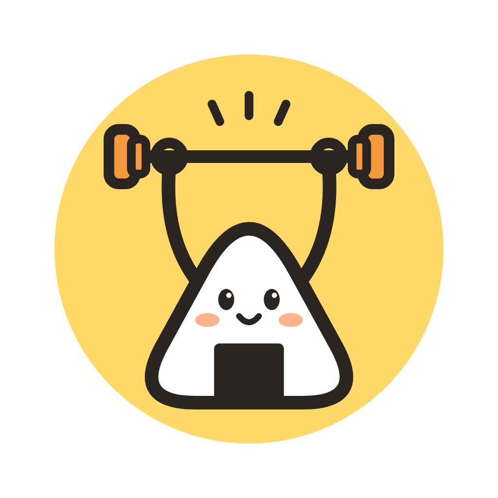

トレ飯ログトレ飯ログ 利用規約
制定日：2026年10月13日
トレ飯ログ 開発室（以下「運営者」）は、筋トレと食事の記録アプリ「トレ飯ログ」（以下「本アプリ」）の利用条件を、次のとおり定めます。本アプリを利用した時点で、この規約に同意したものとみなします。
第1条（本アプリの内容）
- 本アプリは、筋トレ・食事・体重などを利用者自身が記録し、振り返るための道具です。
- 本アプリが表示するカロリー・栄養素の値、目標の目安、アドバイス、カメラで数えた回数は、一般的な基準や公表されている資料をもとに自動で計算した目安です。正確さや、利用者の目的に合うことは保証しません。
- 本アプリは医療機器ではなく、病気の診断・治療・予防を目的としたものではありません。医療上の助言でもありません。
第2条（健康と安全）
- 運動や食事の内容は、利用者自身の体調・体力に合わせて決めてください。持病のある方、妊娠中・授乳中の方、医師から運動や食事の制限を受けている方は、医師や管理栄養士にご相談ください。
- 運動中は周りの安全を確かめ、無理をしないでください。カメラで回数を数えるときは、端末を安定した場所に置いてください。
- 運動・食事の内容によって利用者に生じた体調の変化やけが等について、運営者は、運営者の故意または重大な過失による場合を除き、責任を負いません。
第3条（料金と購入）
- 本アプリは無料で使えます。「プレミアム」（月額の自動更新サブスクリプション）と「広告を消す」（買い切り）は有料です。
- 購入・支払い・解約・返金は、App Store（Apple）または Google Play（Google）の規約と手続きに従います。運営者は代金を直接受け取りません。
- プレミアムは、期間が終わる 24 時間前までに解約しない限り自動で更新されます。解約は App Store／Google Play の「サブスクリプション」から行えます。
- 機種変更や再インストールのあとは、本アプリの「購入を復元」で購入を引き継げます。
- iPhone・iPad でご利用の場合は、Apple の標準の利用規約（https://www.apple.com/legal/internet-services/itunes/dev/stdeula/ ）も適用されます。
第4条（記録の保存）
- 記録は利用者の端末の中だけに保存し、運営者のサーバーには送りません。端末の故障・紛失、本アプリの削除などで記録が消えた場合、運営者は記録を戻すことができません。
- 大切な記録は、本アプリの「バックアップを書き出す」で定期的に保存してください。
- 情報の取り扱いは、別に定める「プライバシーポリシー」のとおりです。
第5条（禁止事項）
利用者は、次のことをしてはいけません。
- 本アプリを改変・解析（リバースエンジニアリング等）すること、または不正な方法で有料の機能を使うこと
- 本アプリやその一部を、運営者の許可なく複製・配布・販売すること
- 法令または公序良俗に反する目的で本アプリを使うこと
第6条（権利）
- 本アプリの画面・文章・アイコン・プログラムの著作権その他の権利は、運営者または正当な権利者に帰属します。
- 本アプリで使っているフォント・ライブラリの権利と利用条件は、本アプリの「ライセンス」に表示しています。
- 利用者が記録した内容（食事の写真を含む）の権利は、利用者に帰属します。
第7条（本アプリの変更・提供の終了）
- 運営者は、利用者に事前に知らせることなく、本アプリの内容を変更し、または提供を終えることがあります。
- 提供を終える場合でも、端末に保存されている記録は「バックアップを書き出す」で取り出せるよう努めます。
第8条（免責）
- 運営者は、本アプリに不具合がないこと、すべての端末で動くこと、利用者の目的に合うことを保証しません。
- 本アプリの利用によって利用者に生じた損害について、運営者は、運営者の故意または重大な過失による場合を除き、責任を負いません。消費者契約法その他の法令により運営者の責任を免除できない場合は、この限りではありません。
第9条（規約の変更）
- 運営者は、必要に応じてこの規約を変更することがあります。変更する場合は、本アプリの更新や公開ページでお知らせします。変更後に本アプリを利用した時点で、変更後の規約に同意したものとみなします。
第10条（準拠法・管轄）
- この規約は日本の法律に従って解釈します。本アプリに関して争いが生じた場合は、運営者の所在地を管轄する地方裁判所を第一審の専属的合意管轄裁判所とします。
お問い合わせ
- トレ飯ログ 開発室：monosense25@gmail.com